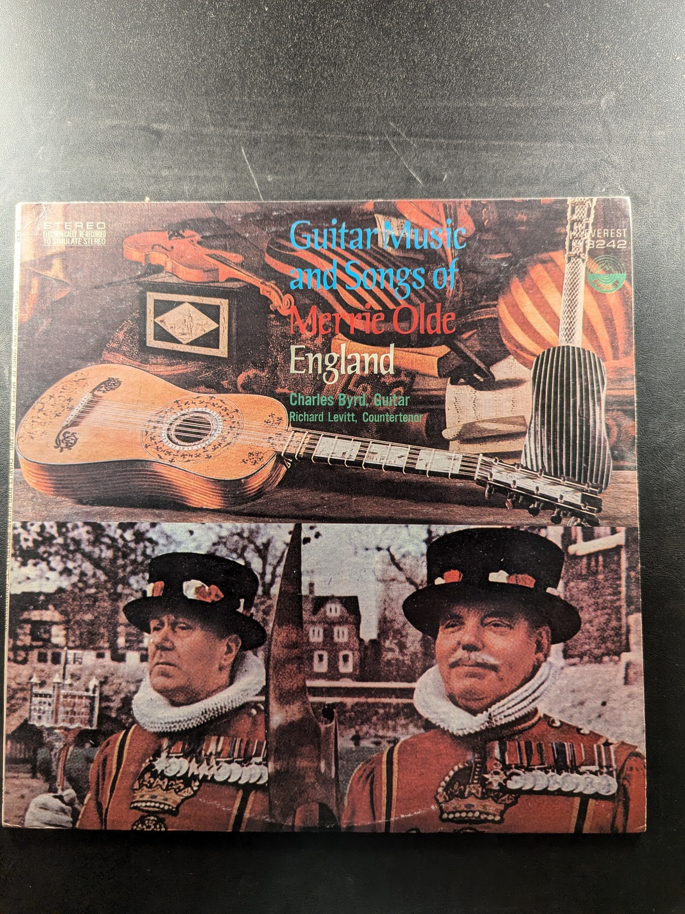

Scottish Lute Music
Jakob Lindberg
BIS LP-201
Love Songs of the 18th Century
Kurt Equiluz, Konrad Ragossnig
Stereocraft SUM 5055
Dances of Dowland
Julian Bream, Lutenist
RCA Victor Red Seal LSC-2987
The Flamenco Guitar of Jose Barroso
Jose Barroso
Custom Records CS 1005
Mandolin Quartet in F Major / Mandolin Quartet in A Major
Hoffmann / Giuliani
Turnabout TV 34016S
Gitarren-Quintette Nos. 4, 7, 9 'La Ritirata di Madrid'
Luigi Boccherini
Deutsche Grammophon 2530 069
Quartet for Guitar, Violin, Viola & Cello / Terzetto Concertante for Guitar, Viola & Cello
Paganini, Luise Walker
Turnabout Vox TV 34322
Guitar Quintets
Boccherini and Schnabel
MHS MHS STEREO 3555
Guitar Quintets Nos. 3 & 9 'La Ritirata di Madrid'
Boccherini, Pepe Romero, Academy of St. Martin-in-the-Fields' Chamber Ensemble
Philips 6500 789
Guitar Music and Songs of Merrie Olde England
Charles Byrd, Richard Levitt
Everest 3242
Collection of Andaluzian Tonadas
Manuel Cano
the musical heritage society inc. MHS 1684
Guitar & Percussion
Siegfried Behrend, Siegfried Fink, Claudia Brodzinska-Behrend
Deutsche Grammophon 2530034
Music for Lute and Strings
Joseph Haydn
Turnabout TV 34327
Guitar Quintets Nos. 1, 2, & 7
Pepe Romero, Academy of St. Martin-in-the-Fields' Chamber Ensemble
Philips 9500 665
Concerto for Classic Guitar and Jazz Piano
Claude Bolling, Angel Romero, George Shearing
Digital DS-37327
Latin-American Music for the Classical Guitar
Balthazar Benítez
Nonesuch H-71349
The 10 String Guitar Interprets Classics... Bach, Paganini, Bloch, Sor, Satie
Vincenzo Macaluso
Arion ARN 33682
Classical Guitar and Strings
Maria-Livia Sao Marcos, Solisti di Zagreb
Everest 3420
Haydn and Handel with Guitar
Karl Scheit
Musical Heritage Society Inc. MHS 525
Rodrigo: Fantasía para un gentilhombre / Giuliani: Introduction, Theme with Variations, and Polonaise, Op. 65
Pepe Romero, Academy of St. Martin-in-the-Fields, Neville Marriner
Philips
Six Sonatas for Guitar, Cello and Harpsichord
László Szendrey Karper, Ede Banda, János Sebestyén
Hungaroton SLPX 12013
Die Barocklaute I
Eugen M. Dombois
abc Classics ABC-L-27006
Early Venetian Lute Music
Paul O'Dette
Arabesque Recordings 8131
Baroque Lute Recital Vol. 2
Toyohiko Satoh
Nonesuch Patrician KS 528
Julian and John/2
Julian Bream and John Williams
RCA Red Seal ARL1-0465
{kind=link}
{kind=link}
{kind=link}
{kind=link}
{kind=link}
{kind=link}
{kind=link}
{kind=link}
{kind=link}
{kind=link}
{kind=link}
{kind=link}
{kind=link}
{kind=link}
{kind=link}
{kind=link}
{kind=link}
{kind=link}
{kind=link}
{kind=link}
{kind=link}
{kind=link}
{kind=link}
{kind=link}
{kind=link}